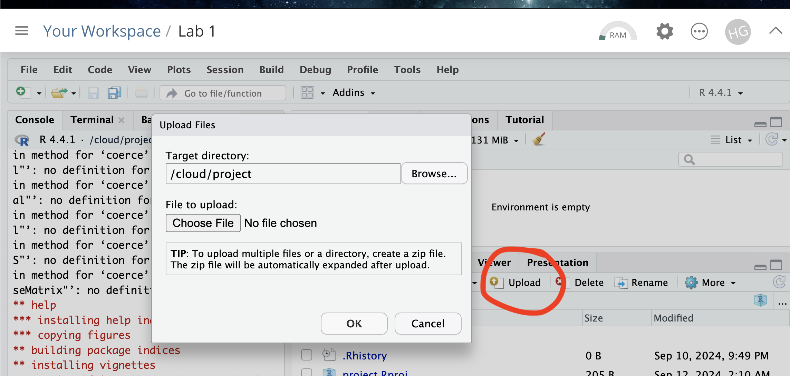

Lab 2: Data summary
Welcome to Lab 2!
The aim of this lab is to start looking at tables of data and to make your first maps.
By the end of this week’s lab, you will be able to:
Make a markdown template
Read in data from an excel file
Conduct exploratory data analysis
Wrangle a table of data
Make initial plots and maps
The lab is worth 100 points and there is a rubric at the end of this page.
Assignment 2 is due by midnight the night before your next lab on Canvas.
Step A: Set up - DON’T SKIP
This time you’re going to create your own markdown files and add in a few new features (themes and code chunk options). We’re also going to save this as a template for future labs. I’ve split the setup instructions for those using their own computers and those using POSIT cloud.
Expand each band for instructions.
Set-up for Posit Cloud users
Task 1. Get the data from Canvas
Go to the Lab 2 Canvas page and download the dataset
frostdata.xlsx.
Task 2. Create a project for Lab 2 (expand for instructions)
Task 3. Upload your dataset to the website. (expand for reminder)

Task 4. Install more packages (expand for instructions)
We need to install some more packages.
Go to to the packages tab,
click install to get to the app-store and download/install these
packages:
readxlviridisggstatsplotterratigrispalmerpenguinstmap
We will also need a package called sf, which runs a lot of the spatial commands in R. Unfortunately, posit cloud sometimes has a few technical issues with sf, so you will need to run a special command.
IN THE CONSOLE, run these two commands.
install.packages("remotes")
remotes::install_github(repo = "r-spatial/sf", ref = "93a25fd8e2f5c6af7c080f92141cb2b765a04a84")T6_Packages.html
Reminder: Tutorial:
Packages cheatsheet.
Set-up for R-Desktop Users
Task 1. Create a project for Lab 2
Task 2. Get the data & put in your Lab 2 folder
Go to the Lab 2 Canvas page and download the dataset frostdata.xlsx. Put it in your lab 2 folder.
Task 3. Install some packages
We need to install some more packages.
Go to to the packages tab,
click install to get to the app-store and download/install these
packages:
readxlviridisggstatsplotterratigrispalmerpenguinstmapsf
Reminder: Tutorial:
Packages cheatsheet.
Set-up your Lab 2 report (DON’T SKIP, NEW THINGS)
Task. Create your RMarkdown file - expand & look at Tutorial 4B and 4C
Task. Edit your YAML code
Your YAML code controls how your final output looks and which type of output it becomes. For example, this could be a website (as for ours), a pdf, a presentation or app.. The basic version is very simple with a title, an author, a self entered date and that we just want a website.
Let’s add in more options.
YAML code is annnoying to edit, because here, spaces really do matter. Everything has to be perfect or it won’t knit.
First, try this - it will break and look at the error code
Select everything in my code chunk here and replace your YAML with this (remember the — on line 1 and at the end).
---
title: "GEOG-364 - Lab 2"
author: "hlg5155"
date: "`r Sys.Date()`"
output:
html_document:
toc: true
toc_float: yes
number_sections: yes
theme: lumen
df_print: paged
---THIS IS WHAT HAPPENS WHEN THE SPACING IS OFF. I try to copy/paste from online for the right spacing but know that each indent is two spaces.
OK, now try with the correct version, remembering to change the author name to your own. If you wonder what Sys.Date() is, don’t touch it and you will find out in the next section…
Task. Change the theme and knit
In the YAML code, change the theme to any one of your choice that
isn’t not lumen (see here to view available themes - https://bootswatch.com/.).
Some might not work, but these are likely to: “default”, “bootstrap”, “cerulean”, “cosmo”, “darkly”, “flatly”, “journal”, “lumen”, “paper”, “readable”, “sandstone”, “simplex”, “spacelab”, “united”, “yeti”.
Task. Clean the file and create/run your library code chunk
Click on your lab script (the Rmd file) and delete all the ‘welcome text’ after line 11.
Press enter a few times and make a new level-1 heading calledSet Up.- We should have all the packages we need installed, but we need to
open them. Make a new code chunk containing this code.
- We should have all the packages we need installed, but we need to
open them. Make a new code chunk containing this code.
library(tidyverse)
library(sf)
library(readxl)
library(skimr)
library(tmap)
library(viridis)
library(tigris)
library(palmerpenguins)
library(readxl)Press the green arrow on the right of the code chunk to run the code inside it. You will see a load of “welcome text” telling your details about the packages you just loaded.
Press the green arrow AGAIN. The text should disappear unless there is an error.Note, remember to run this code chunk EVERY TIME your start R-Studio (in the same way you need to click on an app on your phone before you can use it).
- If you press knit at this point, I’m guessing you will see that all the “library loading text” has returned, making your report look unprofessional and messy. Let’s remove this by editing our code chunk options. Use the tutorial below to below to add warning=FALSE and message=FALSE to your library code chunk.
Task. Edit your Code Chunk Options
Task. Save your lab script template
Your lab script should now look like this, but with your theme and YAML options of choice (you might have a few different libraries than in my screenshot). You should also be able to knit it successfully. If not, go back and do the previous sections!

You can use steps above for every new lab to set up your lab script. But it is much easier to save the file we have just created as a template, then in future labs we can just make a copy. To do this quickly:
Go to the files tab (make sure you are running your project).
- Check the box by
GEOG364_Lab2_userID_CODE.Rmd(with your ID) - Now click on the More menu, then “Copy To”.
- Make a copy in your main GEOG-364 folder called
GEOG364_TEMPLATE_userID_CODE.Rmd. - If you’re on R-Studio-Cloud, just make a copy in the same folder, or
download it to your computer using “export”

Your lab script should now look like this, but with your theme and YAML options of choice (you might have a few different libraries than in my screenshot). You should also be able to knit it successfully. If not, go back and do the previous sections!
Step B1. ChatGPT introduction:
ChatGPT is changing how we code. We will talk in class today about its pros and cons.
Task 15. Go here: https://chatgpt.com/. You might need an account.
Task 16. One by one, copy each of these questions into the chat window to get a sense of ChatGPT’s strengths and weaknesses.
- How do i get the mean in R for the year column of the mpg dataset?
- i dont get it
- i still dont get it
- i still don’t get it. can you explain the concept as though I was a kid
- OK.. but where do I even type these things?
- nope…
- OK,got it :) now, could you give me code chunks for 20 different ways to find this mean in R without installing any packages/apps?
- and now 20 more frpm a different package/app each time
- Out of all of this, which command for the mean would you recommend for the mpg data e.g. simple/does the job/doesn’t break
- Just out of interest, how would i do this in another programming language like python?
I commonly use ChatGPT this way use a new programming concept. AKA, I
NEVER take it’s first answer as the “best” one.
In terms of
what counts as cheating, we’re going to talk about this as a class. But
think of the name of your friend/older-sibling/cousin - someone who you
go to for advice and they know loads, but they can be a bit smug about
it. Now replace the word ChatGPT with their name!
For example,
Is it OK for ‘David’ to brainstorm different code options for the mean?
Sure!
Is it OK if I get David to do the lab for me, then
copy/paste his answer.Nope..
YOU DON’T NEED TO SUBMIT ANYTHING FOR STEP B1
Step B2: Code showcase - more commands
Today’s code showcase builds on the Data Camp chapters from Homework 1 and 2 (https://app.datacamp.com/groups/geog-364/assignments). Try them first! You might also consider using ChatGPT to help.
Building on Lab 1, three useful facts about commands:
- Commands, (often called functions), are the verbs of ‘speaking R’.
They are actions, things you do.
- Commands ALWAYS have parentheses/brackets ( ) after them. It’s how
you know it’s a command.
- You can look at the help file for any command by typing ? then it’s
name into the CONSOLE e.g.
?mean. Or you can go to the help tab next to packages tab, then search for it there. Note, you might have to load the library first! Ever tried getting the instagram help page before you even opened the app? ;)
Commands/functions with empty ( )
These commands are often used to launch an interactive command, or to check something on your computer. You still need the ( ) afterwards, but it can be left empty. I typically run these in the console. Examples
Sys.Date( )
getwd( )file.choose( )
Task : Try the commands
One by one, copy/paste the three commands above EXACTLY into the console and press enter to run. As needed, look at the helpfiles for each of them. E.g. in the console, run
?Sys.Date,?getwd,?file.choose. In your report, make a heading called Code Showcase (if you haven’t).In your report, make a heading called Code Showcase (if you haven’t already).Below it, create a heading-level-2 called “basic commands”. Underneath that, explain what each of the three commands does. Hint, file.choose does NOT open/load any files, or tell you where your project is….
Commands that need information/data
Some commands need a little more information. For example, the
data() command loads an inbuilt dataset into your workspace
so we need to tell it which dataset we want. rnorm()
generates a series of random numbers from a normal distribution, but we
need to tell it how many we need Examples
data(mpg)# loads the mpg data from package ggplot2.summary(mpg)# summarise the entire mgp dataset (hint for lab 1, this is how to get the average year!)rnorm(20)# generates a series of 20 random numbers from a normal distributionnames(mpg)# print the column names of a dataset
Task : Using the information above, try these commands
- Load the penguins dataset from the package
palmerpenguinsusing the data command. - Summarise the penguins dataset using the
glimpse()command. - Look at the penguins dataset using the
View()command. RUN THIS IN THE CONSOLE - Work out the column names of the penguins dataset using the
names()command.
Applying commands to columns & rows of a spreadsheet
Just like Lab 1’s ‘what’s the mean year’ question, we often need to apply commands to individual rows or columns in a spreadsheet. There are several ways to do this.
- Use square brackets and the row/column number
- Use a $ and the column name.
For example, from https://www.statology.org/r-mean-of-column/, here’s how to get that mean year from the mpg data:
# First, type View(mpg) into the CONSOLE and it will bring up the spreadsheet.
#calculate mean using column name, note the $ !
mean(mpg$year)
#calculate mean using column name (ignore missing values)
mean(mpg$year, na.rm=TRUE)
#calculate mean using column position, e.g. we're calculating the mean of the Year column (four from left)
mean(mpg[ , 4], na.rm=TRUE)Task : Using the information above, try these tasks
- Calculate the mean of the column flipper_length_mm in the penguins
dataset
- Calculate the MEDIAN body mass in the penguins dataset
- Hint 1, you need to spell the column name EXACTLY for it to work,
case sensitive,
- Hint 2, look back at your names command!
- Hint 3, https://sparkbyexamples.com/r-programming/median-in-r-examples/
Step C: Last Frost Date Analysis
Now, the lab! Specifically we are going to conduct some exploratory data analysis on average last spring frost dates across the South East USA.
To to this, we are going to follow these steps:
- C1 Investigate the topic before touching the data
- C2 Read the excel file containing the data into R
- C3 Calculate summary statistics based on the code above
- C4 Make some initial plots & maps
C1: Read about the dataset.
The aim of this lab is to analyse the “average last frost dates” obtained from weather stations across the South Eastern USA. E.g. what day of year, on average, is the final day to get frost. I obtained the data from our McGrew textbook (chapter 6)
Task: Read the abstract of the study above to understand the dataset
- The data was originally obtained from this dissertation to assess
the spatial distribution of average spring frost dates: Parnell,
2005, “A Climatology of Frost Extremes Across the Southeast United
States, 1950–2009”:
https://www.proquest.com/openview/d5a7301f0cbe941ead48c96888f791b8/1?pq-origsite=gscholar&cbl=18750&diss=y - Click the link and skim read pages iv and v, e.g. the bit before the
table of contents.
C2: Read in the frostdata excel file
Task: - IN YOUR LAB REPORT, READ IN THE DATA.
- Make sure
frostdata.xslxis in your Lab 2 folder. - Create a code chunk.
- Use the
read_excel()command to read the data into R and save as a variable calledfrost. (https://www.geeksforgeeks.org/reading-and-writing-excel-files-with-r-using-readxl-and-writexl/)
e.g.
C3: Look at the data
Task: - IN THE CONSOLE, type
View(frost).
- You should see a spreadsheet/table/data.frame with these columns:
- Station: The name of the weather station
- State: The US State that the station resides in
- Type_Fake: A synthetic column I added to put in a “type” of station
- Latitude: The latitude of the station (degrees)
- Longitude: The longitude of the station (degrees)
- Elevation: The elevation of the station (feet)
- Dist_to_Coast: The distance from the station to the coast (miles)
- Avg_DOY_SpringFrost: The Day-Of-Year of the average final spring frost date for that stationYou should see a spreadsheet/table/data.frame with these columns:
Note, When I say Day-Of-Year, I mean a number from 1-365 representing the month/day of the year e.g. Jan-1:1, Jan-2:2… Jan-31:31, Feb-1:32… Dec-31:365. We use this number instead of the month/day because its easier to analyse.
C4. Summarise the dataset.
In your report, make a new level-1 heading called
Last Spring Frost. Below, briefly summarise the topic and
dataset. Be as precise as you can! Your answer should include..:
- What topic/question are we studying?
- What is the context? Why was the original study conducted?
- Specify the object of analysis and its domain (hint, the object is NOT temperature)
- What are the variables and units?
- What’s the spatial representation? (Raster? Point? Line? Polygon?) (hint, the next step will help)
- Write anything else that might be relevant to someone analysing the data. E.g. given the topic, are there any other things we should be thinking about climate change.
Note,there is a spell check next to the knit button at the top of the script and press knit regularly to check it all looks good
C5. Summary Statistics
Make a new heading called Summary Statistics
- 1 - Create a new code chunk. Apply the
skim()command to the frost variable. Use that or any other method to work out the number of rows. - 2 - Calculate the mean of the Longitude column in the frost dataframe
- 3 - The minimum distance to the coast using the
mincommand.
E.g. apply themincommand to theDist_to_Coastcolumn of the frost dataframe. - 4 - The median climatological frost date.
E.g. apply themediancommand to theAvg_DOY_SpringFrostcolumn of the frost dataframe (bonus - explain what the median is) - 5 - The interquartile range of the Latitude of the frost data (hint, google/chatGPT the command)
C6 Summaries by group, the table command
Make a new heading called Group statistics.
Sometimes we want to count the occurrences of some category in our
dataset. To do this, we can use the table command to create a frequency
table. This assesses how many rows of our data.frame/spreadsheet fall
into different groups. For example,
gender_table <- table(employee_data$Gender)
Task: - Using the table command, work out how many
weather stations are in each state.
In the text below the code
chunk, in full sentences, interpret the output to tell me how many
stations are in North Carolina.
C7 Histograms
Sometimes it’s just nice to visualise a distribution, using a histogram. You can see tiny mini ones for each variable/column in the output of the skim command, but let’s make something more professional.
C4 Spatial mapping
Make a new level 2 sub-heading called Mapping.
So far, we have ignored the fact our data has a location! We will cover this in more detail in lab 3, but for now, let’s make a quick map. To do this, we need to make R realise that our data contains spatial coordinates.
Task: Create a new code chunk and add this code. We will discuss what is happening in detail next week.
# This tells the computer that the longitude and latitude columns are our spatial coordinates
frost.sf <- st_as_sf(frost,coords = c("Longitude", "Latitude"),crs=4326)Task: Create a code chunk and copy/run this code. This will make your first spatial map of the Elevation column of your data using the tmap package. Take a look at some of the things we might do later in the semester here: https://r-tmap.github.io/tmap/
tmap_mode("view")
# Load the data, then plot the location where the color is linked to the elevation column
tm_shape(frost.sf)+
tm_dots(col="Elevation",palette="Blues",size=0.1)Task Instead of Elevation, make a plot of the last spring frost date (remember the names() command from above to show the column names). Change the palette to another color brewer palette of your choice that isn’t “Blues”. Here are some more you could choose: https://r-graph-gallery.com/38-rcolorbrewers-palettes.html
Task Below the map, describe the pattern you see, along with any potential processes/causes of that pattern (e.g. why do you think it looks like that). As a hint, you can change the base map by clicking on the little stack of paper next to the zoom buttons inside the map.
Step D. Submitting your Lab
Remember to save your work throughout and to spell check your writing (next to the save button). Now, press the knit button again. If you have not made any mistakes in the code then R should create a html file in your lab2 folder, complete with a very recent time-stamp.
If you are on posit cloud:
You can download each of your .RmD and html files by:
- Clicking on the little box next to the Rmd in the Files tab, then
going to the little blue cogwheel (might need to make your Rstudio full
screen) and clicking export.

Repeat the process exactly for the html file underneath it (e,g, just have the html clicked.)
Now go to Canvas and submit BOTH your html and your .Rmd file in Lab 2.
Posit desktop
Go to your Lab 2 folder, In that folder, double click on the html file. This will open it in your browser. CHECK THAT THIS IS WHAT YOU WANT TO SUBMIT
Now go to Canvas and submit BOTH your html and your .Rmd file in Lab 2.

Lab 2 submission check-list
HTML FILE SUBMISSION - 15 marks
RMD CODE SUBMISSION - 15 marks
MARKDOWN/CODE STYLE - 20 MARKS
Your code and document is neat and easy to read. LOOK AT YOUR HTML FILE IN YOUR WEB-BROWSER BEFORE YOU SUBMIT. There is also a spell check next to the save button. You have written your answers below the relevant code chunk in full sentences in a way that is easy to find and grade. For example, you have written in full sentences, it is clear what your answers are referring to.
CODE SHOWCASE - 20 MARKS
LAST FROST DATE - 30 MARKS
[100 marks total]
Overall, here is what your lab should correspond to:
| Grade | % Mark | Rubric |
|---|---|---|
| A* | 98-100 | Exceptional. Not only was it near perfect, but the graders learned something. THIS IS HARD TO GET. |
| NA | 96+ | You went above and beyond |
| A | 93+: | Everything asked for with high quality. Class example |
| A- | 90+ | The odd minor mistake, All code done but not written up in full sentences etc. A little less care |
| B+ | 87+ | More minor mistakes. Things like missing units, getting the odd question wrong, no workings shown |
| B | 83+ | Solid work but the odd larger mistake or missing answer. Completely misinterpreted something, that type of thing |
| B- | 80+ | Starting to miss entire/questions sections, or multiple larger mistakes. Still a solid attempt. |
| C+ | 77+ | You made a good effort and did some things well, but there were a lot of problems. (e.g. you wrote up the text well, but messed up the code) |
| C | 70+ | It’s clear you tried and learned something. Just attending labs will get you this much as we can help you get to this stage |
| D | 60+ | You attempt the lab and submit something. Not clear you put in much effort or you had real issues |
| F | 0+ | Didn’t submit, or incredibly limited attempt. |
Website created and maintained by Helen Greatrex. Website template by Noli Brazil